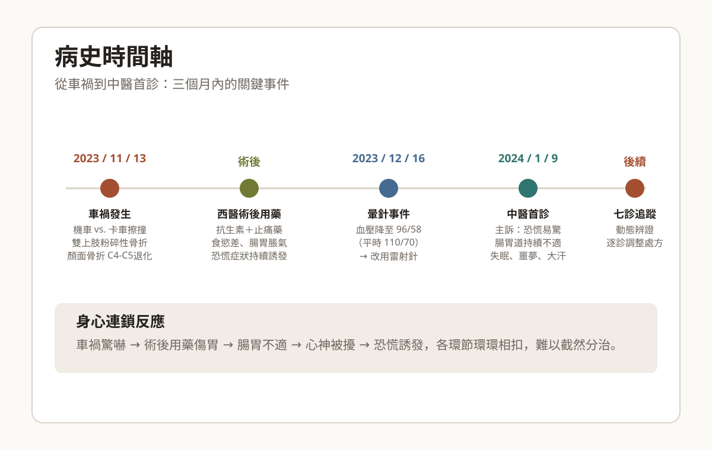
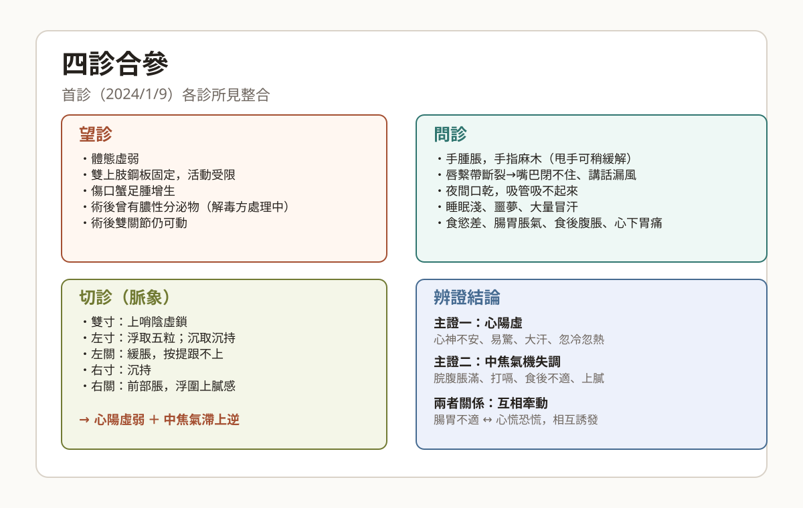
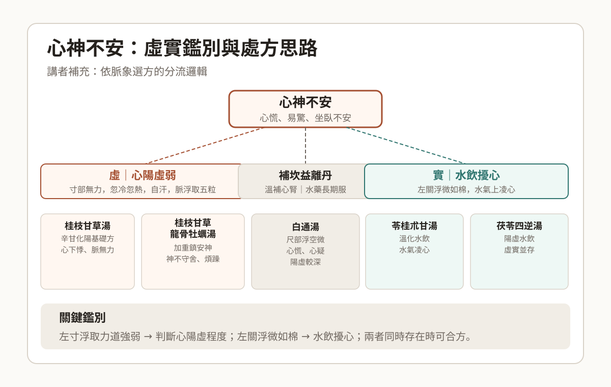
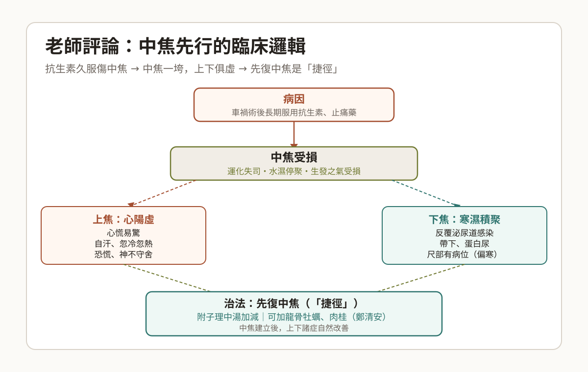

一句話總結
車禍驚嚇誘發心陽虛與中焦氣機失調並存，腸胃不穩反過來誘發恐慌，臨床須動態辨別虛實主次，分診分處方逐步調整。
因此，這個病例的難點不在於找到「一個正確的方」，而在於在多層次、動態變化的症狀中，每次都能準確抓到當下的主要矛盾。
病患背景與主訴
慈濟醫院後中醫師王德慈分享的病例報告，主角是一位 50 歲的廖小姐。她去年 11 月 13 日因騎機車與卡車擦撞，造成雙上肢粉碎性骨折、顏面骨折，並發現 C4-C5 頸椎退化。
- 術後持續服用抗生素與止痛藥，導致食慾變差、腸胃道脹氣、食後腹脹、心下胃痛、鬱嘔。
- 車禍後睡眠變淺、反覆噩夢、容易大量冒汗，恐慌相關症狀持續一個多月。
- 12 月 16 日在整間針灸時首次發生暈針（血壓 96/58，平時 110/70），之後改用雷射針。
- 首次中醫就診：2024 年 1 月 9 日，當天又出現打噴嚏、鼻癢、忽冷忽熱、冒汗等症狀。
我的理解：這不只是身體外傷的後遺症——術後用藥傷及中焦，加上本身有恐慌病史，車禍的驚嚇成了引爆點，讓身心兩條線同時失控。

時間軸：車禍（11/13）→ 術後腸胃受損 → 暈針（12/16）→ 中醫首診（1/9）→ 七診追蹤
個人史與過去病史
身形：164 cm / 56 kg，BMI 20。去年已停經，目前可能處於更年期過渡期。
恐慌病史
前幾年曾有恐慌發作，服用優解半顆，現已停藥超過一年。2023 年曾因恐慌、心悸至急診。
睡眠呼吸中止症
既有問題，睡眠本就偏淺，車禍後噩夢與冒汗情況更加明顯。
代謝相關
海洋性貧血；空腹血糖偏高，HbA1c 6.0；二尖瓣閉鎖不全。
消化道相關
鼻過敏；胃食道逆流（原有問題，車禍後加重）。
值得注意：停經、海洋性貧血、血糖偏高、二尖瓣閉鎖不全——多病共存的背景讓辨證更複雜，每次用藥都需考量整體虛弱狀態。
四診合參
首診所見（2024/1/9）
望診：體態虛弱；雙上肢打鋼板固定，傷口有蟹足腫增生，去年底曾可擠出膿（持續用解毒方加減處理）。術後雙關節仍可活動。
問診：車禍後手部腫脹、手指麻木（甩手可稍緩解）；唇繫帶斷裂導致嘴巴閉不住，夜間口乾，吸管吸不起來，講話明顯漏風；排便偏黏、有不乾淨感；食慾差、腸胃脹氣、食後腹脹、心下胃痛；吃薄荷糖或梅子可稍緩解。
切診：雙寸上少陰虛數；左寸浮取無力（沉取沉遲），左關緩脹，按提跟不上；右寸沉遲，右關前部脹，浮微上逆。
我的理解：左寸浮取無力，但沉取才能摸到持脈——脈氣浮散在上，卻無力往下走。這是心陽虛弱的典型脈象，陽氣不能固攝，所以浮越在外。

四格圖：望診・問診・切診（脈象）・辨證結論，首診四診整合一覽。
辨證思路與首診處方
脈象合參症狀，初步辨為兩個層次的問題：
心陽虛左寸無力、易驚、汗出、忽冷忽熱、心神不安
中焦氣機失調右關上膩、左關緩脹、脘腹脹滿、打嗝上逆
兩者互相牽動腸胃不穩 → 誘發心慌；心陽虛 → 影響中焦升降
首診處方
- 科中①：桂枝甘草龍骨牡蠣湯——辛甘化陽，鎮驚斂浮陽，處理心陽虛主線。
- 科中②：桂枝湯加厚朴杏仁——推動中焦氣機，減少腸胃對心胸的壓迫感。
- 水藥：補坎益離丹——溫補心腎陽氣，自行回去煎開服用四天。
關鍵決策：為何水藥與科中分開處方？補坎益離丹溫補力道較強，適合長期方向性用藥；科中則靈活，方便每次回診依症狀微調。分開可避免互相干擾。

分流圖：心神不安的虛（心陽虛）與實（水飲擾心）鑑別，以及對應處方。
七診追蹤記錄
七次回診中，共遇到兩次感冒插曲與一次泌尿道感染，每次急性期過後仍回歸心陽虛與中焦的主線問題。
第 1 診
2024 / 1 / 9（首診）
主要症狀
恐慌易驚、忽冷忽熱、大量冒汗；打噴嚏鼻癢；腸胃脹氣、食後腹脹、心下胃痛；睡眠淺、噩夢
脈象
雙寸上少陰虛數；左寸浮無力，沉遲；左關緩脹，按提跟不上；右寸沉遲；右關前脹，浮微上逆
處方
桂枝甘草龍骨牡蠣湯
桂枝湯＋厚朴杏仁
水藥：補坎益離丹
第 2 診
2024 / 1 / 16
關鍵：改服藥方式
主要症狀
打嗝放屁腹脹仍有；食量尚可；服水藥後立即腹脹、放屁及大便臭；容易受驚仍持續
脈象
左寸浮取無力；雙關從緩脹轉為滑脹
處方
溫膽湯＋竹茹＋厚朴＋木香
（理氣化痰，改善腹脹）
教導少量平服法（多次少量平躺服水藥）
第 3 診
2024 / 1 / 23
主要症狀
打嗝放屁已改善；少量平服後無腹脹；本週仍有 2 次胸悶＋胃肌肉緊縮＋想吐＋頭暈（1 次因腹脹上廁所後自行緩解）
脈象
左關關格；雙尺脹；右側虛；右關上膩感
處方
原方＋半夏瀉心湯
處理左關格脈，辛開苦降，解中焦寒熱痞結；水藥同方向繼續
第 4 診
（感冒插曲）
先處理外感
主要症狀
感冒症狀：喉嚨痛、流鼻涕、鼻塞
脈象
右寸關伏鉤鎖；右關軟脹，按提根不上
處方
外感科中調整
半夏＋厚朴
化痰消脾藥
（調腸胃氣機為輔）
第 5 診
（腹瀉急性期）
主要症狀
當日腹瀉 6–7 次、腳痛；大便軟散味重；噁心；腹脹嚴重
脈象
雙關如脹；內側有內觸感；上膩感明顯
處方
葛根黃芩黃連湯
木香＋半夏＋茯苓＋白朮＋厚朴
藿香正氣散
（濕氣感明顯故加）
第 6 診
（腸胃漸穩）
主要症狀
腹痛偶爾；大便偏酸，一日 2–3 次；不再腹瀉；仍有腹脹
脈象
雙關脹；關內觸感
處方
藿香正氣改為
參苓白朮散
；其他藥物維持不變
第 7 診
（開兩週份）
回到主線問題
主要症狀
第 1 週：腹部不再痛，脹氣改善；
第 2 週：胃緊縮感回來＋頭暈＋容易受驚＋受驚即大量冒汗（回到初診狀態）
脈象
雙寸上少陰虛數；左寸浮微沉遲；左關緩脹；右關脹
處方
理中湯加減
＋重新加回水藥
後續：感冒外感處理 → 泌尿道感染（西醫兩週）→ 康復後回歸第七診方，繼續處理心陽與中焦，預計近期回診
追蹤心得：七診中共遇到兩次感冒、一次急性腸胃炎、一次泌尿道感染。每次急性期都暫時擱置主線方，先處理外感。值得注意的是，每次身體不適都會連帶誘發心慌恐慌，再次說明整體體質虛弱是根本問題。
補充討論：心神不安的虛實鑑別
講者補充了在實際臨床辨別心陽虛與水飲擾心的思路，重點在於脈象的細節差異。
虛｜心陽虛弱
脈象：寸部浮取無力，或浮取無力但沉取才遲；按提跟不上。
症狀：心慌易驚、自汗、忽冷忽熱、神不守舍、夜間汗出。
- 桂枝甘草湯（辛甘化陽基礎方）
- 桂枝甘草龍骨牡蠣湯（加重鎮安神）
- 補坎益離丹（水藥，溫補心腎）
- 白通湯（尺部浮空微，陽虛較深）
- 附子理中湯（陽虛日久，脾腎同病）
實｜水飲擾心
脈象：左關浮微如棉，或左關有浮軟感；可能合併沉弦脈。
症狀：心悸、頭暈目眩、胸脅滿悶、水氣上衝感。
- 苓桂朮甘湯（溫化水飲，水氣凌心）
- 茯苓四逆湯（陽虛兼水飲同時存在）
- 生脈飲（氣陰兩虛，可與四逆湯同用）
若心陽虛與水飲並存，可參考兩類處方合用。
學習重點：心陽虛的「虛」與水飲擾心的「實」，鑑別關鍵在左寸浮取的力道，以及左關有無浮微如棉的水飲感。脈象不確定時，可從症狀的起伏模式做輔助判斷。
三個臨床提問
報告者向學長提出以下三個臨床問題，作為本次病例分享的結語。
問題一：更年期＋心陽虛
此患者已停經一年。若更年期症候群（潮熱、心血管收縮症狀）與心陽虛脈象同時並存，如何考量組方方向？兩者的病機有無重疊或相互加重？
問題二：心胃互動的切入順序
本案心神不安與中焦輸送不利並存，腸胃不穩又反過來誘發心慌。到底是「中焦上逆擾心」還是「心陽不足影響中焦升降」？臨床上如何判斷主次、決定先治哪個？
問題三：反覆外感的體質補固
此類自律神經失調、免疫偏弱的患者，病程中反覆外感、感染（本案有感冒、急性腸胃炎、泌尿道感染），每次感染又誘發恐慌。除了每次對症處理，有無穩固體質的方向？
老師評論與 Q&A
老師引導式提問（16:22）
老師沒有直接給答案，而是先問學生：「C4-C5 頸椎退化是原有的還是車禍才發現的？」學生回答：車禍後第一次做 CT 才發現，此前沒有症狀。接著老師問：「你覺得哪一個方向最有信心？如果診所只能開科中、你只能選一個切入點，你選哪個？」
學生直覺回答：先處理腸胃（中焦）——因為腸胃脹氣是長久困擾，一直都有。
老師回應：「這個方向是比較好的選擇。」接著展開以下分析：
老師觀點：中焦是根本
- 病因還原：車禍術後大量服用抗生素 + 止痛藥 → 最大的傷害是傷害中焦（甚至傷下焦）。
- 上下受累：中焦出問題之後，間接影響上面的心陽啟動，也影響下面腎陽的生發之氣——上下俱虛都可從中焦解釋。
- 手麻手腫的另一種解讀：排除 C4-C5 頸椎因素後，手指腫脹麻木可能是中焦水飲或痰飲所造成。
- 附子理中湯方向（鄭清安）：附子理中湯 + 龍骨牡蠣 + 肉桂，可同時處理心腎不交與心律問題——中焦建立後，心陽也跟著穩。
- 後續感冒、泌尿道感染：這些反覆感染很多時候都跟中焦運化失調、免疫系統失調有關。
老師金句：「先從中焦把他的生發之氣建立起來，把水飲、痰飲、西藥造成的腸胃損傷先改善，中焦建立好之後，心陽的問題、下焦的感染問題，也許都會慢慢跟著改善。」
三個提問的統一答案
老師指出，學生提出的三個問題（更年期+心陽虛、心胃互動順序、反覆外感）其實都指向同一個答案：
更年期問題
臨床表現是否真的跟更年期有關？先從中焦氣機著手，很多問題也許可以從一個角度慢慢解決，不需要各個擊破。
心胃互動順序
中焦先行——中焦建立後，心陽問題往往也跟著改善。抗生素是傷胃在先，心陽受累在後。
反覆感染體質
反覆感染、感冒，根源都是中焦免疫力失調。先把中焦寒濕處理好，免疫才能從根本恢復。
「捷徑」思維——老師的臨床教學核心
老師說：臨床上病人會丟很多問題進來，關鍵是怎麼去歸納，找到那個「捷徑」——一刀下去，他的很多症狀都能得到改善。
- 把所有症狀的先後順序整理好：第一步用什麼？第二步用什麼？
- 慢慢建立屬於自己的「治病架構與流程」。
- 不要被症狀追著跑，要主動找到核心。
我的理解：這不只是技術教學，而是思維訓練——從「症狀清單」思維升級到「病機根源」思維。找到那個可以牽一髮動全身的節點，才是真正的臨床能力。

流程圖：抗生素傷中焦 → 上下俱虛（心陽虛 + 下焦寒濕）→ 先復中焦，上下同治。
老師補充案例
老師以自己診所的一個病人為例，示範「中焦先行」思路如何解決多症並存的臨床困境。
案例背景
患者曾裝過雙 J 管（腎臟問題），此後長期反覆泌尿道管發炎。最近有三個主要問題：
① 蛋白尿
持續存在，西醫檢查中。老師指出，若只針對蛋白尿開藥，會讓思路變亂。
② 代謝問題
數值偏高但尚屬輕微，需長期追蹤。
③ 反覆性陰道感染
反覆發作，使用抗生素初期有效，後來越吃越無效。
老師的脈象分析
老師從脈象切入，先看尺部（因患者主訴與下焦相關）：
左關弦緊心下有水氣凝集，是病機核心所在
尺部有病位整體偏寒，非熱證
寒濕往下水濕下注 → 下焦感染、白帶、蛋白尿
關鍵教學：越吃越無效的陷阱
老師說：「如果你聽到病人說抗生素剛開始有效，吃第二輪第三輪就沒效了——那你就要提醒自己：
錯誤思路（無效路徑）
繼續用消炎藥、清熱解毒藥針對感染本身處理。
→ 絕對沒效，而且會讓中焦繼續受損。
就像針對蛋白尿「這裡開個藥，那裡開個藥」——心會很亂，結果反而處理不好任何一個。
正確思路（回到根源）
代表中焦已垮。抗生素讓中焦的動能與熱能減少，整體免疫失調。
→ 先把中焦寒濕處理好，從根本恢復運化能力。
從中焦先行，水濕不再下注，下焦感染自然緩解。
治療結果
老師告訴學生，這個患者昨天回診說了一句話：「太神奇了！他說他已經很久沒有小便是清的了。」
- 服藥一週後，小便從混濁轉為清澈。
- 會陰部感染不適明顯降低，分泌物減少。
- 處理的不是感染本身，而是中焦寒濕的根源。
老師結語：病人主述 ≠ 治療切入點
病人主述（表象）
蛋白尿、反覆感染、陰道炎——每一個看起來都是「急症」「要馬上處理的問題」。
治療邏輯（根源）
左關弦緊 → 心下水氣 → 水濕下注。先溫化中焦寒濕，一刀解決所有下焦問題。
老師金句：「有時候病人在講的時候你可以注意，但是你一定要再去看看——是單純只有這裡的問題嗎？如果他是因為其他問題造成的而你沒有辦法注意到，那就有點可惜。很多症狀的關鍵其實在中焦。」
概念圖解
治療路徑：三個層次
急性問題感冒、急性腸胃炎、泌尿道感染：先對症處理，暫擱主線方
中焦氣機腹脹、打嗝、脹滿：溫膽湯、半夏瀉心湯、理中湯動態調整
心陽根本恐慌、易驚、自汗：桂甘龍牡湯、補坎益離丹長期方向
心智圖
車禍後恐慌誘發：心陽虛與中焦氣機失調並治
核心病機心陽虛：桂甘龍牡湯、補坎益離丹；中焦失調：溫膽湯、半夏瀉心湯
動態辨證七診中每次脈象細節不同，在心陽虛主線上持續微調中焦處方，遇外感急症則先處理
老師核心教學中焦先行——抗生素傷中焦最深，先復中焦則心陽與下焦問題可同時改善（附子理中湯方向）
「捷徑」思維找到核心病位，一刀下去多症同時改善；病人主述≠治療切入點，要找到根本節點
術語卡片
心陽虛心陽氣不足，無力溫煦、振奮神明。主症：心慌、易驚、自汗、忽冷忽熱、神不守舍。
中焦氣機失調脾胃升降功能紊亂，氣滯不通。主症：脘腹脹滿、打嗝、噯氣上逆、食後不適。
補坎益離丹溫補心腎陽氣之方，「坎」為腎水，「離」為心火，補腎陽以溫心陽。本案用作水藥長期服。
桂枝甘草龍骨牡蠣湯桂枝甘草湯（辛甘化陽）加龍骨牡蠣（重鎮安神）。用於心陽虛、神不守舍、心慌易驚。
苓桂朮甘湯茯苓＋桂枝＋白朮＋甘草，溫化水飲、降逆平衝。用於水飲凌心、頭暈心悸。
溫膽湯半夏、竹茹、枳實等，化痰和胃、清膽安神。用於膽胃不和、痰熱擾心。
半夏瀉心湯辛開苦降之代表方，解中焦寒熱痞結。用於心下痞、嘔噦、腸鳴。
葛根黃芩黃連湯清熱利濕止利。用於熱利、腸胃濕熱導致的腹瀉。本案第五診急性腹瀉期使用。
藿香正氣散芳香化濕、理氣和中。用於外感夾濕、腸胃不適，有明顯濕氣感時加用。
參苓白朮散健脾益氣，滲濕止瀉。腸胃功能已趨穩定後，用於鞏固脾胃功能。
暈針針灸過程中出現暈厥前反應，如血壓驟降、冷汗、面色蒼白。本案因此改用雷射針。
少量平服法將水藥分成多次、每次少量、平躺服用的方法。可減少水藥對腸胃的衝擊，適用於脾胃虛弱者。
附子理中湯＋龍骨牡蠣＋肉桂鄭清安的心腎不交用方方向。先溫中焦，加龍骨牡蠣鎮安，肉桂引火歸元，可同時處理心陽虛與心律問題。
中焦先行老師核心教學：抗生素久服傷中焦最深；先復中焦運化生發之氣，上焦心陽與下焦寒濕可同步改善，是多症並存的「捷徑」。
左關弦緊（心下水氣）老師補充案例的關鍵脈象：左關弦緊代表心下有水氣凝集，水濕往下注可造成下焦感染、帶下、蛋白尿等。
待追問問題
更年期與心陽虛停經後的更年期症候群（潮熱、盜汗、心血管症狀）與心陽虛症狀高度重疊，如何從脈象或病因上做鑑別？
心胃相互因果臨床上如何快速判斷是「胃病及心」還是「心病及胃」？有沒有脈象上的提示？
附子類方的適用時機本案出現「一回到心陽虛狀態」的反覆，附子理中湯、白通湯的選用時機與桂枝甘草湯系有何不同？